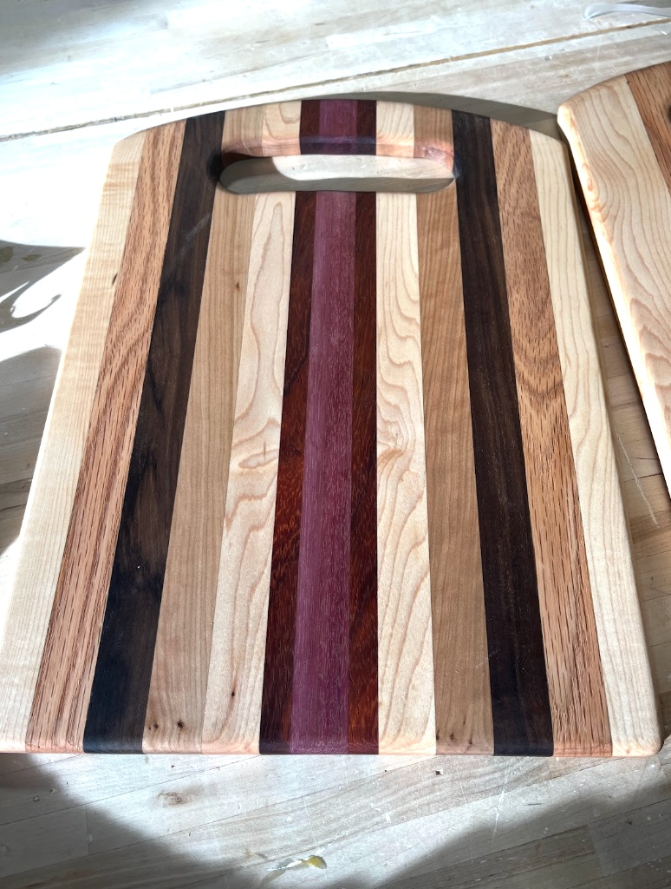
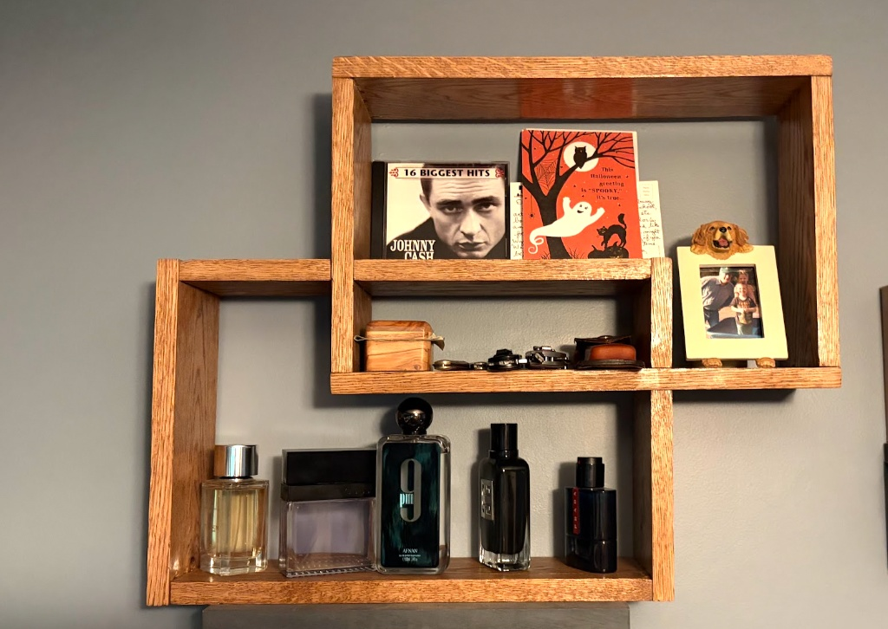
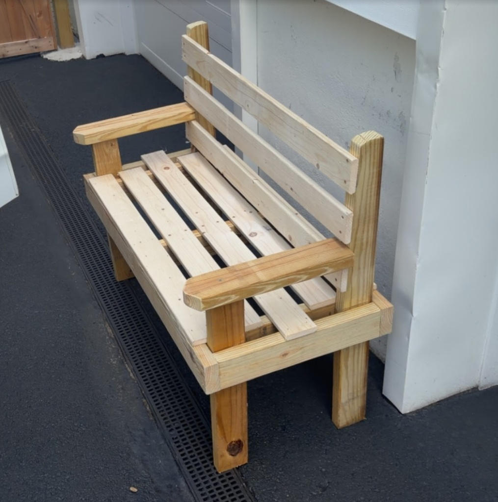
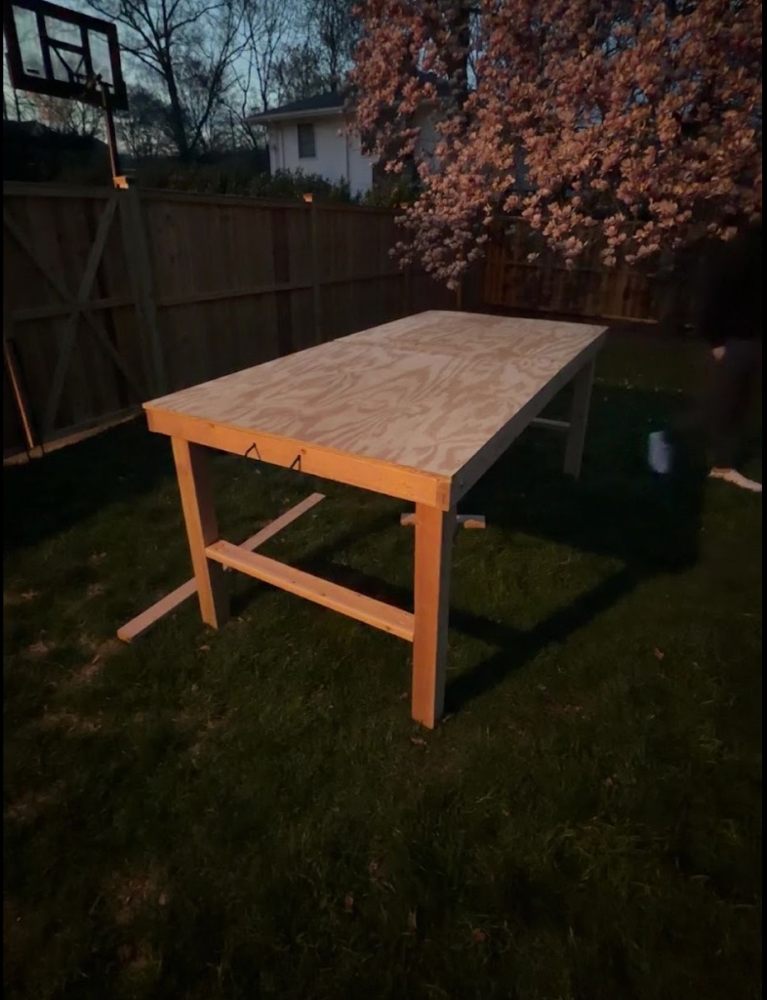
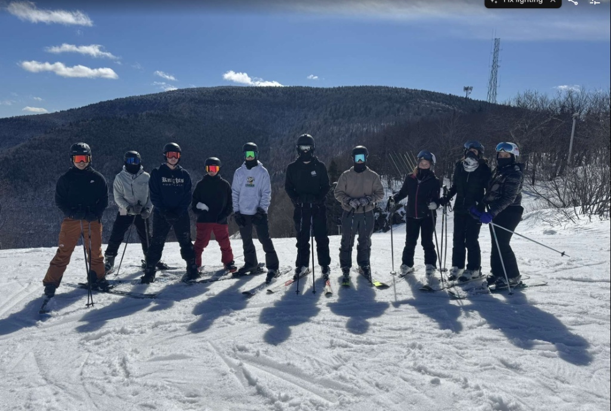
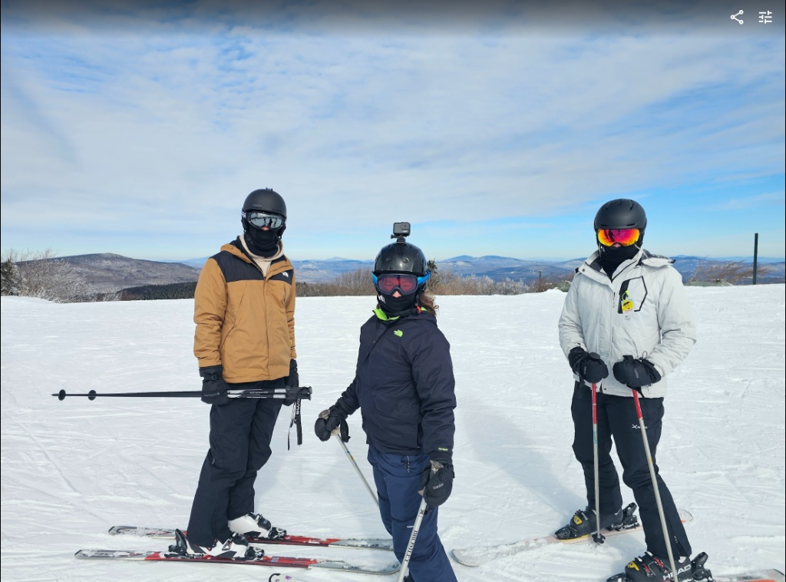
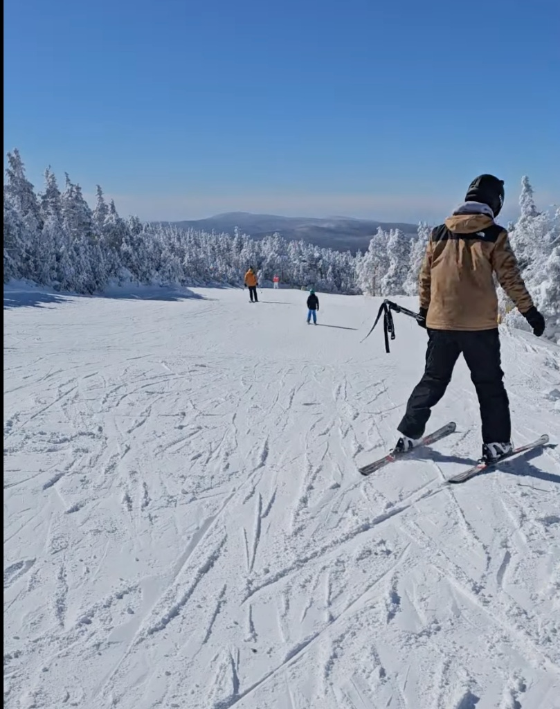
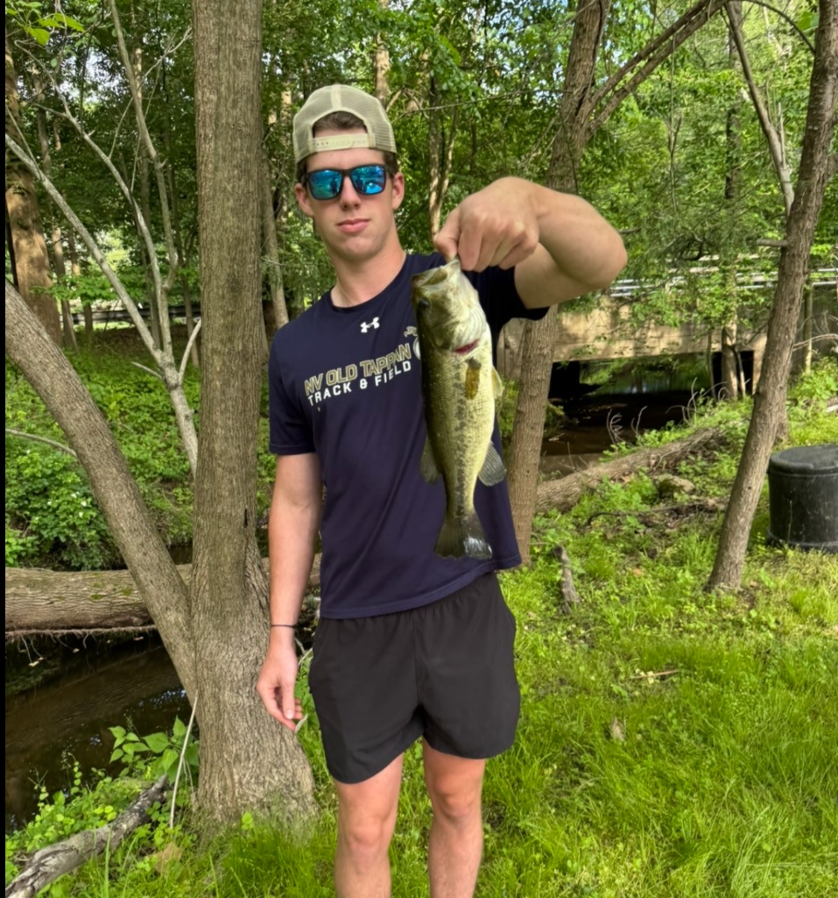
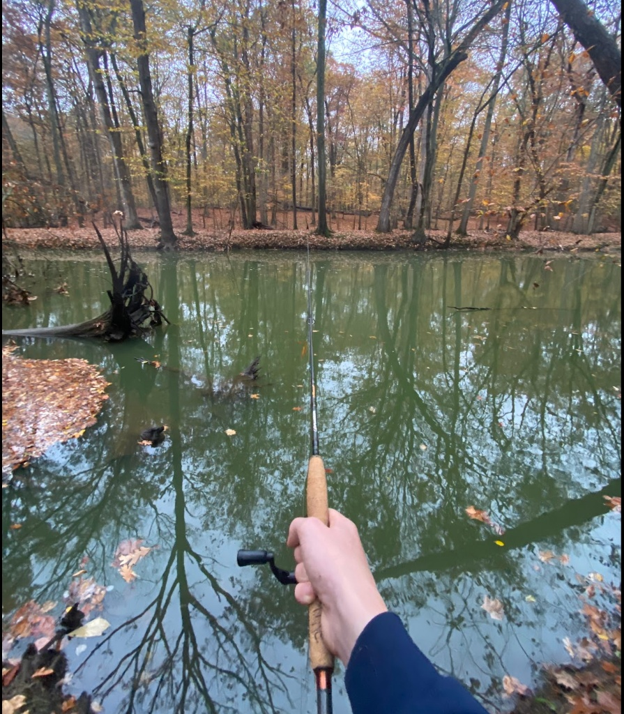

Student-Athlete, Coach & Woodworker
Hi, I’m Patrick. I attend the Bergen County Institute for Science and Technology at Old Tappan. When I’m not in class, you can usually find me competing in varsity track, coaching youth diving, out on the ski slopes, playing acoustic guitar, or working on builds in the shop.
4.09
High School GPA
2x County
Team Championships
15 Kids
Youth Dive Coach
2026
Andy O'Grady Award
Woodworking & Builds
I love building things with my hands. Woodworking taught me how to measure carefully, stay patient, and fix mistakes when things don't go as planned.

Striped Hardwood Cutting Board
Made using maple, dark walnut, and a purpleheart stripe right down the middle. I glued and clamped the boards, planed the surface flat, routed out a carry handle, and rounded the edges. Sealed it with mineral oil and beeswax so it's safe for food prep.

Interlocking Wall Shelf
A custom multi-box shelf I built for my bedroom wall. I cut and joined solid oak pieces into overlapping boxes to create different sized cubbies for cologne, books, and framed photos, then stained and sealed it.

Wooden Patio Bench
Built this bench from scratch using treated lumber so it holds up outside. I angled the back slats slightly so it's comfortable to sit on, added wide armrests, and put everything together with exterior-grade screws.

Heavy Duty Work Table
Framed with sturdy 2x4s and diagonal cross-bracing to keep it solid. I used a thick plywood top so I can use it for tool prep, yard equipment repairs, and cutting down materials.
Acoustic Guitar
I'm completely self-taught on guitar and play purely for fun. My favorite style to play is country, whether I'm learning covers by ear or messing around with chord progressions.
Country Rhythm & Strumming
Working on dynamic acoustic picking, steady rhythm, and building smooth transitions between open chords.
"Iris" – Goo Goo Dolls
Practicing the signature picking pattern, timing, and voicings on an acoustic setup outside.
Original Jam & Picking
Writing my own chord progressions and experimenting with alternate strums and hammer-ons late at night.
Downhill Skiing
Skiing has been one of my favorite hobbies for years. It's fast, challenging, and one of the best ways to get outside during winter.
On the Mountain
Every winter, hitting the mountains up north with friends and family is something I look forward to. Whether it’s navigating icy East Coast mornings or finding lines through the trees, it requires complete focus.
A lot of the athleticism in skiing—staying balanced, using leg drive, and trusting your instincts—carries right over to the track when spring rolls around.



Freshwater Fishing
Early mornings on the lake or walking the riverbanks around Bergen County. It's where I go when I need to slow down and recharge.


Patience by the Water
Fishing is mostly about paying attention to details: figuring out where fish are holding under logs or weeds, reading the current, and trying different lures until something bites.
Spending so much time outdoors is also why I stay involved with cleanups along the Northern Valley Greenway. If you use local trails and waterways, you should help keep them clean.
My Events
I compete year-round on both the Winter and Spring Track teams at Old Tappan, helping our team take home county and sectional titles.
Pole Vault
Definitely the most technical event I do. It’s all about sprinting at top speed, planting the pole with confidence, and staying comfortable upside down in mid-air.
Javelin
One of my strongest events. It takes good footwork on the cross-steps, explosive hips, and clean release mechanics. Finished top-three at multiple championship meets in 2026.
Hurdles & High Jump
I run high hurdles and clear the bar in high jump during winter. Jumping between multiple events helped build versatility and score important team points.
Coaching, Work & Volunteering
What I do outside of school sports and classes.
Head Dive Coach & Lifeguard
- Coached 15 kids (ages 6–12), teaching basic board approach, hurdle steps, entries, and building their confidence on the 1-meter board.
- Received the 2026 Andy O'Grady Award for dedication and persistence in coaching youth athletics.
- Worked daily shifts lifeguarding and making sure pool guests stayed safe.
Restaurant Busser
- Bussed tables, ran food, and helped keep the floor running smoothly during busy weekend rushes.
- Got a realistic look at how a fast-paced local restaurant operates behind the scenes.
Community Service
- Northern Valley Greenway: Regular cleanups along local roads and trails to clear trash and protect habitats.
- Old Tappan Senior Center: Hung out with residents playing bingo/Jeopardy, and helped them navigate their smartphones, apps, and emails.
- Norwood Rec Camp: Led games and sports for a group of 20 elementary and middle school campers.